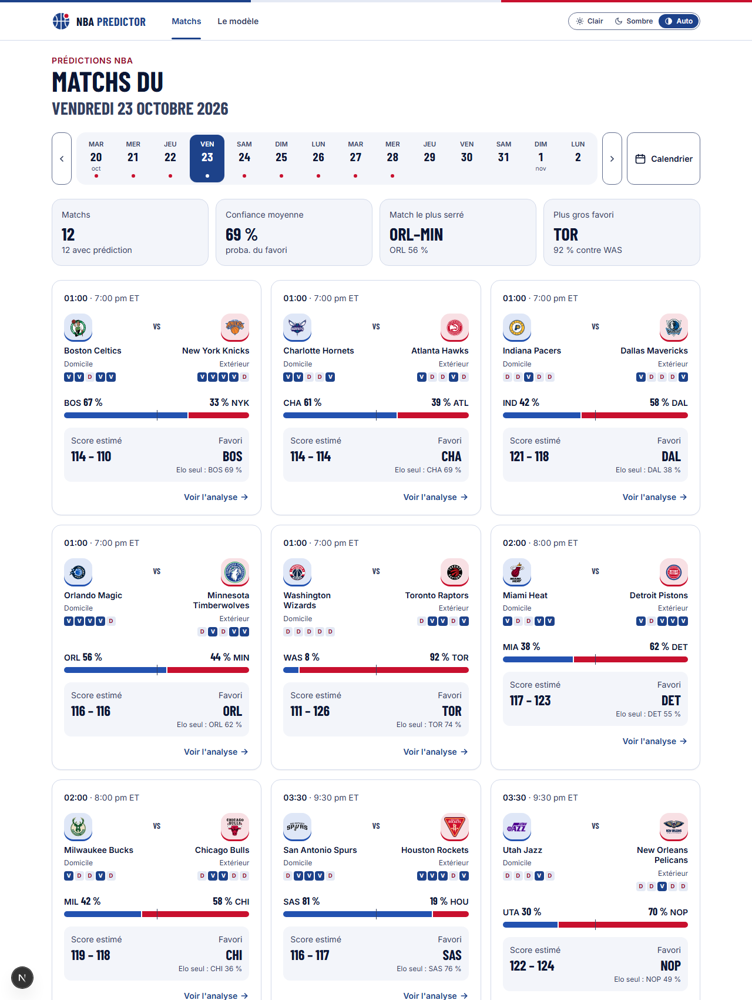
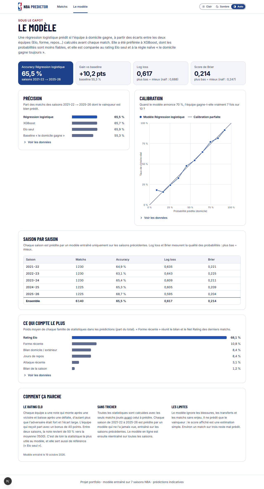
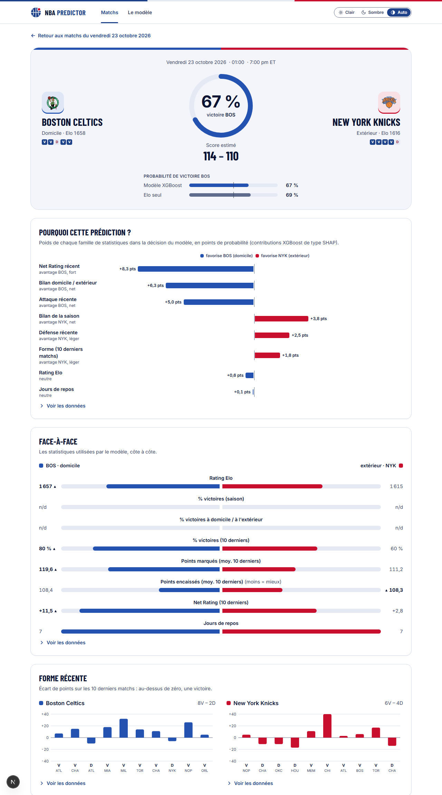

Dans ce document
Chaque partie explique une notion simplement, puis la relie au projet. Les encadrés bleus « À retenir » donnent l'essentiel à savoir dire. Les encadrés rouges « En entretien » proposent une phrase toute prête. Un mot technique te bloque ? Il est défini dans le glossaire, à la fin.
« NBA Predictor est une application web qui prédit les matchs de NBA. Je récupère dix saisons de données, je calcule des variables comme un classement Elo, et j'entraîne un modèle de Machine Learning avec scikit-learn. Une API en Python (FastAPI) sert les prédictions, et un site en Next.js les affiche avec des graphiques qui expliquent chaque prédiction. Le site est en ligne sur mon serveur et se met à jour chaque jour. Le modèle trouve le vainqueur dans 66 % des cas, contre 55 % pour la règle “l'équipe à domicile gagne toujours”. »
NBA Predictor est une application web qui prédit l'issue des matchs de NBA, et qui explique chaque prédiction.
Pour chaque match, le site affiche :
Le site est en ligne sur nba.remicoimbra.fr. Il se met à jour chaque jour avec les nouveaux matchs.

La page d'accueil : les matchs du 23 octobre 2026, avec la probabilité de victoire et le score estimé de chaque match.
Pour montrer un projet complet, de bout en bout : récupérer des données réelles, entraîner un modèle de Machine Learning, le rendre disponible par une API, l'afficher dans une interface soignée et accessible, puis le mettre en ligne sur un vrai serveur.
Une phrase : une application web qui prédit les matchs NBA avec du Machine Learning, et qui explique chaque prédiction. Trois couches : les données et le modèle (Python), l'API (Python, FastAPI), le site (JavaScript, Next.js).
Une donnée part du site de la NBA et finit sous forme de graphique dans ton navigateur. Voici son trajet.
| Dossier | Langage | Rôle | Image |
|---|---|---|---|
| data/ | Python | Récupère les matchs, calcule les variables, entraîne le modèle. | la cuisine |
| api/ | Python | Reçoit une question (« qui va gagner ce soir ? ») et répond en JSON. | le serveur du restaurant |
| front/ | JavaScript | Affiche les réponses : pages, graphiques, calendrier. | la salle et l'assiette |
| infra/ | PowerShell, Bash | Met à jour les données et met en ligne les nouvelles versions. | la livraison |
logreg.pkl.team_state.json) et le calendrier (schedule.json). On ne réentraîne pas le modèle.Il n'y en a pas pour l'instant. Des fichiers CSV et JSON en tiennent lieu. C'est un choix assumé : 12 000 matchs, c'est petit, et une base de données ajouterait un logiciel de plus à installer et à surveiller. Une base PostgreSQL est prévue si le projet grandit.
Données (Python) → fichiers → API (Python) → site (JavaScript). Le modèle est entraîné une fois, les données sont mises à jour chaque jour, la prédiction est calculée à chaque visite.
Python : un langage de programmation simple à lire, très utilisé pour les données et l'IA, grâce à ses nombreuses bibliothèques. Tout data/ et api/ est en Python (version 3.14).
Bibliothèque (ou package) : du code écrit par d'autres, qu'on installe et qu'on réutilise. Exemple : pandas pour les tableaux.
pip : l'outil qui installe les bibliothèques Python (pip install pandas).
requirements.txt : la liste des bibliothèques et de leurs versions exactes. pip install -r requirements.txt réinstalle tout à l'identique sur une autre machine, par exemple le serveur.
Un venv est un dossier qui contient un Python et ses bibliothèques, rien que pour un projet.
Pourquoi ? Deux projets peuvent demander deux versions différentes de la même bibliothèque. Sans venv, tout est installé au même endroit et les projets se marchent dessus. Avec un venv, chaque projet a sa boîte à outils.
Dans le projet, le venv est api/venv. On l'active avant de travailler : « (venv) » apparaît alors dans le terminal.
# Une seule fois : créer l'environnement et installer les bibliothèques cd api python -m venv venv .\venv\Scripts\Activate.ps1 pip install -r requirements.txt # Ensuite, à chaque fois : activer puis lancer l'API .\venv\Scripts\Activate.ps1 uvicorn app.main:app --reload
Lancer uvicorn depuis le mauvais dossier donne l'erreur No module named 'app'. Il faut être dans api/, venv activé. Autre point important : data/ et api/ utilisent les mêmes versions de scikit-learn, car le modèle est sauvegardé par l'un et rechargé par l'autre. Une version différente peut empêcher de le recharger.
JavaScript : le langage des navigateurs web. Le site est écrit en JavaScript (pas en TypeScript).
Node.js : permet d'exécuter du JavaScript hors du navigateur. On s'en sert pour lancer le site en développement et le construire.
npm : l'équivalent de pip pour JavaScript. Le fichier package.json joue le rôle de requirements.txt. npm run dev lance le site en local.
Git garde l'historique de chaque modification du code. Un commit est une version enregistrée, avec un message qui dit ce qui a changé. On peut revenir en arrière à tout moment. GitHub héberge ce dépôt en ligne ; le dépôt du projet est public, c'est une vitrine.
Les données et les modèles ne sont pas sur GitHub : ils sont lourds et on peut les régénérer. Le fichier .gitignore liste ce que Git doit ignorer.
CSV : un tableau en texte. Une ligne par enregistrement, colonnes séparées par des virgules. Comme un fichier Excel très simple. Les matchs sont stockés ainsi.
JSON : du texte structuré en paires « clé : valeur », lisible par tous les langages. C'est le format qu'échangent l'API et le site.
{
"home_team": { "name": "Boston Celtics", "tricode": "BOS" },
"prediction": {
"home_win_probability": 0.633,
"predicted_home_score": 114,
"predicted_away_score": 110
}
}
.pkl : un objet Python sauvegardé dans un fichier. Le modèle entraîné est stocké ainsi (logreg.pkl), puis rechargé par l'API.
venv = une boîte à outils isolée par projet. requirements.txt / package.json = la liste des outils. Git = l'historique du code. CSV = tableaux, JSON = échanges entre l'API et le site.
De stats.nba.com, le site officiel de statistiques de la NBA. La bibliothèque Python nba_api interroge ce site à notre place. Elle propose des « endpoints » (des points d'accès) :
LeagueGameFinder : tous les matchs d'une saison, avec les statistiques de chaque équipe ;LeagueGameLog : la feuille de match de chaque joueur (255 000 lignes sur 10 saisons) ;ScoreboardV3 : les matchs prévus un jour donné (le calendrier).La NBA donne une ligne par équipe et par match, donc deux lignes par match. fetch_games.py les recombine en une ligne par match : équipe à domicile, équipe à l'extérieur, scores, et le boxscore (tirs tentés, rebonds, balles perdues…). Le script garde un cache : s'il a déjà les données, il ne les télécharge pas une seconde fois.
pandas est la bibliothèque Python pour manipuler des tableaux. Un tableau s'appelle un DataFrame : des lignes et des colonnes nommées, comme une feuille Excel. pandas s'appuie sur numpy, qui fait les calculs sur les nombres très vite.
| Opération | Ce qu'elle fait |
|---|---|
pd.read_csv("games.csv") | Lit un fichier CSV et le transforme en DataFrame. |
df[df["season"] == "2025-26"] | Garde seulement les lignes d'une saison (un filtre). |
df.groupby("team_id") | Fait un calcul équipe par équipe. |
s.shift(1) | Décale d'une ligne : chaque match reçoit la valeur du match précédent. |
s.rolling(10).mean() | Moyenne glissante sur les 10 dernières lignes. |
df.to_csv("out.csv") | Enregistre le DataFrame dans un fichier CSV. |
clean_data.py prépare les données :
home_win : 1 si l'équipe à domicile gagne, 0 sinon ;| Fichier | Contenu |
|---|---|
| raw/games_history.csv | Les matchs bruts, une ligne par match. |
| raw/player_games_raw.csv | Une ligne par joueur et par match. |
| processed/games_clean.csv | Les matchs nettoyés et triés. |
| processed/game_features.csv | Les matchs avec toutes les variables calculées (partie 6). |
| processed/team_state.json | L'état actuel de chaque équipe : Elo, derniers matchs, joueurs. Lu par l'API. |
| processed/schedule.json | Le calendrier, de 3 jours avant à 14 jours après aujourd'hui. |
nba_api récupère les données. pandas les manipule sous forme de DataFrame. Le nettoyage crée la cible home_win et trie les matchs par date.
Au lieu d'écrire des règles à la main, on montre à un algorithme des milliers de matchs passés et leur résultat. Il trouve lui-même le lien entre les statistiques et le résultat.
home_win, 1 ou 0.fit) : l'étape où le modèle apprend.predict) : appliquer le modèle à un nouveau match.Par convention, on appelle X le tableau des features et y la colonne de la cible :
| Match | diff_elo | diff_rest_days | diff_win_pct_last10 | home_win (y) |
|---|---|---|---|---|
| BOS – NYK | +45 | 0 | +0,20 | 1 |
| MIA – DET | −30 | −1 | −0,10 | 0 |
| … | … | … | … | … |
Valeurs inventées pour l'exemple. Les colonnes de gauche forment X, la dernière forme y.
On parle d'apprentissage supervisé : pour chaque exemple, on connaît la bonne réponse. Deux familles :
Le modèle ne répond pas oui ou non : il donne une probabilité (« 63 % de chances pour Boston »). C'est plus utile et plus honnête : un 51 % et un 90 % ne disent pas du tout la même chose.
On ne note pas un élève sur les exercices qu'il a déjà corrigés. Pour un modèle, c'est pareil : on l'évalue sur des matchs qu'il n'a jamais vus pendant l'entraînement. Sinon, la note est trop belle.
Le modèle apprend les exemples par cœur, y compris leur part de hasard. Il est excellent sur les matchs d'entraînement et mauvais sur les nouveaux. Pour l'éviter dans le projet : un modèle simple, peu de variables (12), et l'« arrêt précoce » pour XGBoost (partie 7).
C'est le piège numéro un. Il s'agit d'utiliser, sans le vouloir, une information qu'on n'aurait pas eue au moment de prédire. Exemple : le nombre de tirs tentés pendant le match. Le modèle semble génial en test, et il est inutile en vrai. Quatre protections dans le projet :
shift(1) : chaque moyenne n'utilise que les matchs d'avant (extrait A, partie 15).FEATURE_PATTERNS) : une colonne n'est utilisée que si son nom correspond à un motif autorisé. Une nouvelle colonne ne devient jamais une feature par accident.check_features.py : il inverse le résultat de quelques matchs et vérifie que les variables de ces matchs ne bougent pas. Seules celles des matchs suivants doivent changer.LogisticRegression), la préparation des données (StandardScaler, SimpleImputer), les Pipeline et les métriques (log_loss). Tous ses modèles s'utilisent pareil : fit(X, y) pour apprendre, predict_proba(X) pour prédire..pkl.Features (X) + cible (y) → entraînement → modèle → probabilité. On teste toujours sur des matchs jamais vus. Le danger principal est la fuite de données : n'utiliser que ce qui est connu avant le match.
Le feature engineering consiste à transformer les données brutes en variables utiles au modèle. C'est souvent là que se joue la qualité d'un modèle, plus que dans le choix de l'algorithme.
L'Elo vient des échecs. Chaque équipe a une note, au départ 1500. Après chaque match, le gagnant prend des points au perdant. Battre une équipe forte rapporte plus que battre une équipe faible. Gagner largement rapporte un peu plus (multiplicateur d'écart, une idée du site FiveThirtyEight).
La probabilité que l'équipe à domicile gagne :
Le « + 40 » est l'avantage du terrain. Après le match, chaque note bouge de :
Exemple. Boston (1600) reçoit New York (1550). Écart : 1600 + 40 − 1550 = 90 points, soit 63 % de chances pour Boston. Si Boston gagne de 10 points, il prend environ 7 points à New York. S'il perd de 10 points, il en perd environ 13. Une surprise fait bouger les notes davantage.
Entre deux saisons, chaque note revient à mi-chemin vers 1500, car les effectifs changent pendant l'été.
Réglages. K, l'avantage du terrain et le retour vers 1500 ont été choisis parmi 396 combinaisons testées (tune_elo.py). Avant, l'avantage du terrain valait 100 points : l'Elo donnait 62 % de chances au domicile en moyenne, alors qu'il gagne 55 % de ses matchs. Avec 40, il tombe juste.
Pourquoi c'est la meilleure variable (59 % du poids du modèle) : contrairement au pourcentage de victoires, l'Elo tient compte de la force des adversaires.
| Variable | Ce qu'elle mesure |
|---|---|
Bilan de la saison (win_pct) | Le pourcentage de victoires depuis le début de la saison. |
| Bilan domicile / extérieur | Le pourcentage de victoires à domicile pour l'équipe qui reçoit, à l'extérieur pour l'autre. |
| Forme récente | Victoires sur les 10 derniers matchs, et Net Rating récent. |
| Net Rating | Points marqués moins points encaissés, pour 100 possessions. Une possession est une action d'attaque. |
| Attaque récente | Points marqués en moyenne sur les 5 et 10 derniers matchs. |
| Jours de repos | Jours depuis le dernier match, plafonnés à 7. Repère la fatigue des matchs à la suite (back-to-back). |
Effectif (lineup_delta) | La force des joueurs du dernier match, comparée à la force habituelle. Repère les absents. |
Le modèle reçoit surtout des écarts domicile − extérieur. Par exemple diff_elo = Elo du domicile − Elo de l'extérieur. C'est plus simple pour lui : il n'a pas à apprendre la soustraction. Le modèle final utilise 12 variables : 10 écarts et l'Elo de chaque équipe.
lineup_delta = force au dernier match − force moyenne des 10 derniers matchs. Très négatif quand des titulaires manquaient.La fatigue des déplacements (distance parcourue, décalage horaire, matchs des 4 derniers jours) a été testée. Aucun gain confirmé : elle n'a pas été gardée. Savoir dire « j'ai essayé, ça n'a pas marché, donc je ne l'ai pas gardé » est un vrai point fort en entretien.
L'Elo est une note qui monte quand on gagne, surtout contre une équipe forte. C'est la variable la plus importante. Le modèle utilise 12 variables, surtout des écarts entre les deux équipes. Les absents sont repérés grâce au dernier match joué.
Quatre façons de prédire ont été comparées, de la plus simple à la plus complexe.
| Modèle | Principe | Précision | Log loss |
|---|---|---|---|
| Règle naïve | « L'équipe à domicile gagne toujours. » La base à battre (baseline). | 55,3 % | 0,688 |
| Elo seul | La formule de l'Elo, sans apprentissage. | 65,9 % | 0,618 |
| XGBoost | Des centaines de petits arbres de décision. | 65,7 % | 0,618 |
| Régression logistique | Une somme pondérée des 12 variables. Le modèle en ligne. | 66,1 % | 0,614 |
Mesuré sur 6 140 matchs jamais vus (saisons 2021-22 à 2025-26). Pour la log loss, plus bas = mieux (partie 8).
Malgré son nom, c'est un modèle de classification. Elle fonctionne en deux temps :
z s'appelle le log-odds (le logarithme de la cote). z = 0 donne 50 %, z positif favorise le domicile, z négatif l'extérieur.
Ses qualités : simple, rapide, difficile à surentraîner, et explicable : chaque coefficient dit dans quel sens et avec quelle force une variable pousse.
Un Pipeline enchaîne des étapes, appliquées dans le même ordre à l'entraînement et à la prédiction. Celui du projet en a trois :
Avantage : tout tient en un seul objet, sauvegardé dans un seul fichier. Impossible d'oublier une étape au moment de prédire.
Un arbre de décision est une suite de questions oui / non (« l'écart d'Elo dépasse-t-il 50 ? », puis « moins de 2 jours de repos ? »…) qui mène à une prédiction. Le boosting construit des centaines de petits arbres l'un après l'autre : chaque nouvel arbre corrige les erreurs des précédents, et la prédiction est la somme de tous.
XGBoost repère des relations complexes, mais il peut surapprendre. D'où l'arrêt précoce (early stopping) : on arrête d'ajouter des arbres quand l'erreur ne baisse plus sur des matchs mis de côté. Le modèle final garde moins de 200 petits arbres, au lieu de 300 au départ.
XGBoost reste utilisé ailleurs : il prédit les minutes des joueurs, où il gagne nettement (partie 10).
« J'ai comparé une régression logistique et XGBoost. Le modèle le plus complexe n'était pas le meilleur : la régression logistique donne de meilleures probabilités, et je peux expliquer chacune de ses prédictions. Le choix s'est fait sur une mesure, pas sur une intuition. »
Un modèle ne vaut que par la façon dont on le mesure. Cette partie est sans doute la plus importante pour un entretien en data.
Précision (accuracy) : le pourcentage de matchs où le favori du modèle a gagné. Simple à comprendre, mais elle ignore la confiance : un 51 % et un 90 % comptent pareil.
Log loss : elle punit les probabilités trop sûres d'elles qui se trompent. Plus elle est basse, mieux c'est.
| Le modèle dit | Résultat | Pénalité |
|---|---|---|
| 90 % domicile | le domicile gagne | 0,11 (faible) |
| 90 % domicile | le domicile perd | 2,30 (très forte) |
| 55 % domicile | le domicile perd | 0,80 (modérée) |
Repère : dire toujours 50 / 50 donne 0,693. Le modèle fait 0,614.
Score de Brier : la moyenne de (probabilité − résultat)². Même idée, plus douce. Repère : 0,25 pour un 50 / 50 permanent. Le modèle fait 0,213.
Calibration : quand le modèle annonce 70 %, l'équipe gagne-t-elle vraiment 7 fois sur 10 ? L'erreur de calibration du modèle est d'environ 1 point.
Le site affiche des probabilités : elles doivent être justes, pas seulement désigner le bon favori. C'est pourquoi la log loss est le critère principal.

La page « Le modèle » du site : les mesures, et la courbe de calibration (les points suivent la diagonale : les probabilités sont fiables).
Les matchs ont un ordre dans le temps. Un découpage au hasard mélangerait passé et futur : le modèle apprendrait sur des matchs postérieurs à ceux qu'il prédit. Le walk-forward respecte le temps : pour prédire une saison, on entraîne uniquement sur les saisons d'avant.
C'est exactement la situation réelle : prédire la saison qui vient avec tout le passé connu. Leçon apprise : au début, le modèle était testé sur la seule saison 2025-26, avec 69 % de précision. Sur 5 saisons, la moyenne est de 66 %, de 64 % à 68 % selon la saison. Une seule saison donnait une vision trop optimiste.
Poids par saison : les saisons anciennes comptent moins (leur poids est divisé par deux toutes les deux saisons). Le jeu a changé : le domicile gagnait 58-59 % de ses matchs en 2016-19, contre 54-55 % aujourd'hui.
D'une version à l'autre, l'écart est souvent minuscule (0,002 de log loss). Progrès réel ou simple hasard ? Trois outils :
| Essai | Écart de log loss (intervalle à 95 %) | Décision |
|---|---|---|
| Indicateur d'effectif | −0,0023 [−0,0040 ; −0,0006] : tout sous zéro | Adopté |
| Fatigue des déplacements | −0,0005 [−0,0015 ; +0,0005] : l'intervalle contient zéro | Écarté |
Log loss = qualité des probabilités, c'est le critère principal. Walk-forward = on prédit toujours le futur avec le passé. Un gain dont l'intervalle de confiance contient zéro n'est pas un gain : on ne le garde pas.
Avec une régression logistique, chaque prédiction se décompose exactement en contributions des variables.

Fiche du match Cleveland – Atlanta : l'Elo (+5,1 points) et l'effectif (+3,2) poussent vers Cleveland, la forme récente (+4,4) vers Atlanta. Résultat : 60 % pour Cleveland.
En moyenne, sur tous les matchs d'entraînement :
On fait davantage confiance à une prédiction qu'on comprend. C'est ce qu'on appelle l'IA explicable. Avec XGBoost, il aurait fallu une approximation (des méthodes comme SHAP). Avec la régression logistique, l'explication est exacte : le biais plus la somme des contributions redonne exactement la probabilité affichée. Le script check_features.py le vérifie.
« Chaque prédiction est expliquée sur la fiche match. Pour une régression logistique, la contribution d'une variable, c'est son coefficient multiplié par sa valeur standardisée. La somme des contributions redonne exactement la probabilité : ce n'est pas une approximation. »
Le modèle principal ne prédit que le vainqueur. Le score et les statistiques des joueurs en sont déduits.
Le haut d'une fiche match : la probabilité (60 %) et le score estimé (120 – 117).
Chaque équipe a deux notes, mises à jour après chaque match comme l'Elo : son rythme (combien de possessions dans ses matchs) et ses points (combien de points par possession dans ses matchs). Ces notes tiennent compte des adversaires rencontrés.
L'idée : l'écart final d'un match suit à peu près une courbe en cloche (loi normale), d'écart-type σ. Si le modèle donne 50 %, l'écart attendu est nul. Plus la probabilité s'éloigne de 50 %, plus l'écart grandit. Φ−1 est la fonction inverse de la loi normale : elle transforme une probabilité en nombre d'écarts-types.
Exemple : 63 % pour Boston → Φ−1(0,63) ≈ 0,34 → écart ≈ 0,34 × 12,7 ≈ 4 points. Score affiché : 114 – 110.
Avantage : le score ne contredit jamais le favori. L'ancienne méthode, qui estimait chaque équipe séparément, désignait un autre vainqueur dans 22 % des matchs.
Chaque score est accompagné d'une fourchette d'environ ±15 points. Sur les saisons testées, elle contient le vrai score dans 81 % des cas, pour 80 % visés. C'est honnête : un score de basket est difficile à prévoir (environ 15 points d'erreur sur le total des deux équipes).
| Erreur moyenne par joueur | Minutes | Points | Rebonds | Passes |
|---|---|---|---|---|
| Moyenne de la saison du joueur | 5,31 | 4,80 | 1,97 | 1,38 |
| Minutes apprises × rendement (en ligne) | 4,77 | 4,68 | 1,91 | 1,35 |
Limite : 14 % des joueurs attendus ne jouent finalement pas (blessure, repos).
Total = rythme × efficacité. Écart = déduit de la probabilité, donc le favori est toujours devant. Fourchette à 80 % vérifiée sur les données. Joueurs : minutes par XGBoost, puis minutes × rendement par minute.
Une API (Application Programming Interface) est une porte d'entrée par laquelle un programme demande quelque chose à un autre. Ici, le site demande « les matchs du 23 octobre, avec leurs prédictions », et l'API répond en JSON.
HTTP est le langage du web : un client envoie une requête, le serveur renvoie une réponse avec un code. REST est une convention : chaque ressource a une adresse (URL), et on utilise des verbes HTTP (GET pour lire, POST pour créer…). Toutes les routes du projet sont des GET : l'API est en lecture seule.
| Route | Ce qu'elle renvoie |
|---|---|
GET /games/today?date=2026-10-23 | Les matchs d'un jour, avec leurs prédictions. |
GET /games/calendar | Les jours disponibles et leur nombre de matchs. |
GET /games/{game_id} | La fiche complète d'un match : explication, joueurs, courbe d'Elo. |
GET /model/metrics | Les résultats du dernier entraînement. |
FastAPI est un framework Python pour écrire des API. Une fonction Python précédée d'un décorateur (@router.get("/today")) devient une route. FastAPI vérifie les paramètres, convertit les dictionnaires Python en JSON et génère une documentation interactive (/docs).
uvicorn est le serveur qui fait tourner l'application et écoute les requêtes. L'option --reload le relance à chaque modification du code (en développement).
Pourquoi FastAPI ? Le modèle est en Python : l'API peut le charger directement, sans conversion. Et FastAPI est simple, rapide et bien documenté.
main.py : crée l'application, ajoute CORS, branche les routeurs.routers/ : les routes. Elles reçoivent la requête, gèrent les erreurs, renvoient la réponse.services/ : la logique métier. predictor_service.py charge le modèle et prédit, schedule_service.py lit le calendrier.C'est la séparation des responsabilités : chaque fichier a un rôle clair, et une route reste courte et lisible.
/games/today?date=2026-10-23.schedule_service lit schedule.json : la liste des matchs du jour.predictor_service lit l'état des deux équipes dans team_state.json : Elo, derniers matchs, joueurs.features_lib.py, les mêmes formules qu'à l'entraînement.logreg.pkl, chargé une seule fois) donne la probabilité.L'entraînement calcule les variables sur tout l'historique, l'API pour un seul match à venir. Si les deux calculaient l'Elo d'une façon légèrement différente, le modèle se tromperait sans aucun message d'erreur. Solution : un seul fichier de formules, features_lib.py, utilisé des deux côtés. Et check_features.py vérifie sur 50 matchs que les deux donnent les mêmes valeurs, au milliardième près.
| Code | Signification dans le projet |
|---|---|
| 200 | Tout va bien. |
| 400 | La date est mal écrite (attendu AAAA-MM-JJ). |
| 404 | Cette date n'est pas encore synchronisée, ou le match n'existe pas. |
| 502 | Le site de la NBA ne répond pas (la faute vient d'ailleurs). |
| 503 | Le modèle n'est pas prêt (fichier manquant). On peut réessayer plus tard. |
Un match contre une équipe inconnue (un club étranger en présaison) renvoie prediction: null sans faire échouer le reste de la liste.
En développement, le site tourne sur localhost:3000 et l'API sur localhost:8000 : ce sont deux « origines » différentes. Par sécurité, le navigateur bloque un site qui interroge une autre origine, sauf si celle-ci l'autorise. CORS est ce mécanisme d'autorisation : l'API déclare « j'accepte les requêtes de localhost:3000 ». En production, le site et l'API partagent le même domaine (l'API est sous /api) : CORS n'est plus nécessaire.
React est une bibliothèque JavaScript pour construire une interface avec des composants : des briques réutilisables. GameCard est la carte d'un match, TeamBadge le logo d'une équipe, WinGauge la jauge de probabilité. Un composant est une fonction JavaScript qui renvoie du JSX, une écriture proche du HTML.
use. useState crée un état, useEffect lance une action (comme un appel à l'API). useApi est un hook écrit pour le projet.Next.js est un framework construit sur React. Son App Router transforme les dossiers en pages :
| Fichier | Page |
|---|---|
| src/app/page.js | / : les matchs du jour (la date est dans l'URL, /?date=2026-10-23) |
| src/app/match/page.js | /match?id=… : la fiche d'un match |
| src/app/modele/page.js | /modele : les résultats du modèle |
| src/app/layout.js | Le cadre commun à toutes les pages : en-tête, polices, thème |
"use client" en haut d'un fichier indique un composant exécuté dans le navigateur, nécessaire pour l'interactivité (clics, calendrier, chargement des données).
Tous les appels passent par services/api.js (extrait E, partie 15). Le hook useApi gère trois états, chacun avec son affichage :
Tailwind permet de styler avec des petites classes directement dans le HTML (text-sm, font-bold, space-y-6) au lieu d'écrire un fichier CSS à part. Les couleurs des deux thèmes (clair et sombre) sont déclarées une seule fois dans globals.css.
Les graphiques (jauge, barres des facteurs, courbe d'Elo, calibration) sont faits main en SVG, sans bibliothèque. Ils sont animés avec la bibliothèque motion.
npm run check:contrast.prefers-reduced-motion).npm run build produit de simples fichiers HTML, CSS et JavaScript (dossier out/). Le serveur n'a donc aucun programme Node.js à faire tourner : c'est plus simple, plus sûr et sans coût en mémoire. Conséquence : la fiche match est à l'adresse /match?id=… plutôt que /match/…, car un export statique ne peut pas générer à l'avance une page par match.
ESLint (npm run lint) relit le code JavaScript pour repérer les erreurs et les mauvaises pratiques.
« J'ai soigné l'expérience utilisateur : chaque prédiction est expliquée par des graphiques, les états de chargement et d'erreur sont prévus, et le site respecte le niveau AAA des contrastes WCAG, avec un script qui le vérifie automatiquement. »
VPS (serveur privé virtuel) : un ordinateur loué chez OVH, sous Linux (Ubuntu), allumé jour et nuit.
SSH : une connexion sécurisée au serveur depuis le terminal, avec une clé plutôt qu'un mot de passe. scp copie des fichiers à travers SSH.
Caddy : le serveur web placé devant tout le reste (on parle de reverse proxy). Il reçoit toutes les visites en HTTPS, sert les fichiers du site, et transmet les adresses /api/… à l'API. Il obtient seul le certificat HTTPS (le cadenas du navigateur).
systemd : le gestionnaire de services de Linux. Il lance l'API au démarrage, la relance si elle plante, et l'enferme : pas d'accès à Internet, fichiers en lecture seule, mémoire limitée. Même avec une faille, l'API ne pourrait presque rien faire.
stats.nba.com ne répond pas aux serveurs des hébergeurs (blocage côté NBA, testé depuis le VPS). Donc, chaque jour à 10 h, une tâche sur le PC (sync_to_vps.ps1) :
team_state.json et schedule.json ;L'envoi est atomique : le fichier est d'abord copié sous un nom temporaire, puis renommé d'un coup. L'API ne lit donc jamais un fichier à moitié copié.
Si le PC reste éteint plusieurs jours, les prédictions vieillissent, puis le calendrier ne couvre plus la date du jour. Le service se dégrade, il ne tombe pas en panne.
deploy_to_vps.ps1 construit le site, envoie le code de l'API et le modèle, redémarre l'API et vérifie qu'elle répond. Les versions précédentes sont gardées : on peut revenir en arrière.
Caddy reçoit les visiteurs en HTTPS et aiguille vers le site (fichiers statiques) ou l'API (service systemd isolé). Les données sont mises à jour depuis le PC, car la NBA bloque les serveurs.
Inutile de tout connaître. Voici les fichiers à savoir situer et expliquer en une phrase.
| Fichier | Rôle |
|---|---|
| data/ : données et modèle | |
| collectors/fetch_games.py | Télécharge les matchs avec nba_api, une ligne par match. |
| collectors/fetch_player_logs.py | Télécharge les feuilles de match des joueurs. |
| collectors/fetch_schedule.py | Récupère le calendrier → schedule.json. |
| preprocessing/clean_data.py | Nettoie, crée la cible home_win, trie par date. |
| preprocessing/feature_engineering.py | Calcule toutes les variables sur l'historique. |
| preprocessing/features_lib.py | Le fichier central : toutes les formules (Elo, moyennes, repos, effectif, score, joueurs), partagées entre l'entraînement et l'API. |
| preprocessing/team_state.py | L'état actuel de chaque équipe → team_state.json. |
| preprocessing/check_features.py | Contrôles : pas de fuite de données, l'API calcule comme l'entraînement. |
| models/train_model.py | Entraîne et compare les modèles, sauvegarde logreg.pkl et model_metrics.json. |
| models/evaluate_model.py | Walk-forward, mesures, comparaison appariée par bootstrap. |
| models/score_model.py | Le score estimé et sa fourchette. |
| models/player_model.py | Le modèle des minutes et les statistiques des joueurs. |
| models/tune_elo.py | Teste 396 réglages de l'Elo. |
| models/saved_models/ | Le modèle (logreg.pkl), le modèle des minutes, la liste ordonnée des 12 variables (feature_columns.json), les résultats (model_metrics.json). |
| api/ : le back-end | |
| app/main.py | Crée l'application FastAPI, ajoute CORS, branche les routes. |
| app/routers/games.py | Les routes /games/… et la gestion des erreurs. |
| app/routers/model.py | La route /model/metrics. |
| app/services/predictor_service.py | Charge le modèle, calcule les variables d'un match, prédit et explique. |
| app/services/schedule_service.py | Lit le calendrier. |
| app/core/config.py | Les réglages, lus dans des variables d'environnement (dev ou production). |
| front/ : le site | |
| src/app/ | Les pages (page.js, match/, modele/) et le cadre commun (layout.js). |
| src/components/ | Les briques d'interface : GameCard, MatchView, ModelView, les graphiques. |
| src/services/api.js | Tous les appels à l'API. |
| src/lib/useApi.js | Le hook de chargement : chargement, erreur, données. |
| src/app/globals.css | Les couleurs des deux thèmes et la configuration de Tailwind. |
| infra/ et documentation | |
| infra/sync_to_vps.ps1 | La mise à jour quotidienne des données vers le serveur. |
| infra/deploy_to_vps.ps1 | La mise en ligne d'une nouvelle version. |
| README.md, docs/ | La présentation du projet, l'architecture, le guide de déploiement. |
Cinq extraits réels du projet. Les numéros rouges renvoient aux explications sous chaque extrait.
grouped = long_df.groupby("team_id") 1
long_df[f"avg_pts_scored_last{w}"] = ( 2
grouped["pts_scored"]
.transform(lambda s, w=w: s.shift(1).rolling(w, min_periods=1).mean()) 3
)
long_df a une ligne par équipe et par match, triée par date. groupby fait le calcul équipe par équipe.avg_pts_scored_last10. Le f"…{w}" insère la valeur de w (5 ou 10) dans le nom.shift(1) décale d'un match : la ligne du match N reçoit les points du match N−1. Le match lui-même n'est jamais utilisé, c'est la protection contre la fuite. rolling(w).mean() fait la moyenne des w dernières valeurs ; min_periods=1 accepte moins de w matchs en début d'historique ; transform renvoie un résultat aligné sur les lignes d'origine.| Match | Points marqués | Moyenne des 3 précédents |
|---|---|---|
| 1 | 110 | vide (aucun match avant) |
| 2 | 100 | 110 |
| 3 | 120 | 105 |
| 4 | 90 | 110 |
def elo_expected_home(r_home, r_away, params=DEFAULT_ELO_PARAMS): 1 return 1 / (1 + 10 ** (-((r_home + params.home_advantage) - r_away) / 400)) def elo_update(r_home, r_away, home_win, home_score, away_score, params=DEFAULT_ELO_PARAMS): expected_home = elo_expected_home(r_home, r_away, params) 2 actual_home = 1.0 if home_win == 1 else 0.0 margin = abs(home_score - away_score) # ... (écart d'Elo du vainqueur, pour le multiplicateur) mov_multiplier = elo_mov_multiplier(margin, elo_diff_for_winner) 3 delta = params.k * mov_multiplier * (actual_home - expected_home) 4 return r_home + delta, r_away - delta 5
** veut dire « puissance » en Python.actual_home − expected_home : la surprise. Favori qui gagne → petite variation. Favori qui perd → grosse variation.def make_logreg() -> Pipeline:
return Pipeline([
("imputer", SimpleImputer(strategy="median")), 1
("scaler", StandardScaler()), 2
("clf", LogisticRegression(max_iter=1000)), 3
])
# Utilisation (simplifiée)
model = make_logreg()
model.fit(X_train, y_train) 4
p_home = model.predict_proba(X_match)[:, 1] 5
joblib.dump(model, "saved_models/logreg.pkl") 6
max_iter : nombre maximal d'étapes de l'algorithme qui cherche les meilleurs coefficients.predict_proba renvoie deux colonnes : P(défaite du domicile) et P(victoire). [:, 1] garde la seconde.router = APIRouter(prefix="/games", tags=["games"]) 1 @router.get("/today") 2 def get_today_games(on_date: str | None = Query(default=None, alias="date")): 3 target_date = _parse_date(on_date) or date.today() 4 service = _require_predictor() games = _call_schedule(get_todays_games, target_date) return { 5 "date": target_date.isoformat(), "count": len(games), "games": [_serialize_game(service, g, target_date) for g in games], } def _parse_date(on_date): ... except ValueError: raise HTTPException(status_code=400, 6 detail=f"Date invalide : '{on_date}' (attendu YYYY-MM-DD)")
/games.GET /games/today.?date= de l'URL. Il s'appelle on_date dans le code, car date est déjà un nom de type Python. str | None : texte ou rien (facultatif)._require_predictor et _call_schedule transforment les problèmes en erreurs 503, 404 ou 502.[… for g in games] est une compréhension de liste : on prépare chaque match.const API_BASE_URL = process.env.NEXT_PUBLIC_API_URL ?? "http://127.0.0.1:8000"; 1 async function request(path) { 2 let res; try { res = await fetch(`${API_BASE_URL}${path}`); 3 } catch { throw new ApiError(0, "API injoignable. Vérifier qu'elle est bien démarrée."); } if (!res.ok) { 4 // ... lit le message d'erreur renvoyé par l'API throw new ApiError(res.status, detail); } return res.json(); } export function getGames(date) { return request(date ? `/games/today?date=${date}` : "/games/today"); } // Dans le composant de la page d'accueil : const games = useApi(date, () => getGames(date)); 5 {games.loading && !games.previous && <CardSkeletons />} {games.error && <ErrorState error={games.error} onRetry={games.retry} />}
/api en production, l'API locale en développement. ?? donne la valeur par défaut si la variable est absente.async / await : on attend la réponse sans bloquer la page.fetch est la fonction du navigateur qui envoie une requête HTTP. Les guillemets inversés `…${…}` insèrent des variables dans le texte.res.ok est vrai pour les codes 200 à 299. Sinon, on lance une erreur qui garde le code : le site peut afficher « date non synchronisée » pour un 404.useApi recharge quand la date change et donne trois états. && affiche un composant seulement si la condition est vraie : des squelettes pendant le chargement, un message et un bouton « Réessayer » en cas d'erreur.Des questions probables, avec une réponse courte à adapter avec tes mots. Ne les récite pas : comprends-les.
Voir l'encadré « Le projet en 30 secondes » au début. Termine par un chiffre (66 % contre 55 %) et propose de montrer le site en direct.
À adapter avec tes vraies raisons. Arguments solides : le sport offre beaucoup de données publiques, et le résultat se vérifie chaque soir. C'était un bon terrain pour un projet complet : données, Machine Learning, back-end, front-end et mise en ligne.
Oui, pour du sport : il y a beaucoup de hasard, et même les cotes des bookmakers tournent autour de 70 % de favoris gagnants. Surtout, c'est mesuré honnêtement : sur 5 saisons que le modèle n'avait jamais vues. Et ce qui compte le plus pour moi, c'est que les probabilités soient justes (la log loss), pas seulement le favori.
Deux exemples. Technique : la NBA bloque les serveurs, donc mon API ne pouvait pas récupérer les données ; j'ai déplacé la récupération sur mon PC, qui envoie les fichiers au serveur chaque jour. Data : garantir que l'API calcule exactement les mêmes variables qu'à l'entraînement ; j'ai mis toutes les formules dans un seul fichier partagé et écrit un script de contrôle.
Au lieu d'écrire les règles moi-même, je montre à l'ordinateur 12 000 matchs passés avec leur résultat. Il trouve tout seul quelles statistiques comptent et combien. Ensuite, il applique ce qu'il a appris aux matchs à venir.
L'écart d'Elo entre les deux équipes : environ 59 % du poids du modèle. Il tient compte de la force des adversaires, ce que ne fait pas un simple pourcentage de victoires.
Chaque équipe a une note. Après un match, le gagnant prend des points au perdant, plus s'il était outsider et s'il gagne largement. L'équipe à domicile a un bonus de 40 points, et les notes reviennent à mi-chemin vers la moyenne entre deux saisons. J'ai choisi ces réglages parmi 396 combinaisons testées.
Je les ai comparés sur les mêmes matchs. La régression logistique donne de meilleures probabilités, de façon nette et sur les 5 saisons. Les relations sont presque linéaires, donc XGBoost n'apporte rien. Et elle s'explique exactement. J'utilise quand même XGBoost pour les minutes des joueurs, où il est meilleur.
C'est utiliser une information qu'on n'aurait pas eue au moment de prédire, par exemple des statistiques du match lui-même. J'utilise shift(1) pour ne prendre que les matchs d'avant, une liste blanche de colonnes, une évaluation dans l'ordre du temps, et un script qui vérifie qu'en changeant le résultat d'un match, ses variables ne bougent pas.
En walk-forward : chaque saison est prédite par un modèle entraîné uniquement sur les saisons d'avant. Un découpage aléatoire mélangerait passé et futur, et le résultat serait trop optimiste. C'est aussi ce qui m'a montré que mon premier chiffre, 69 % sur une seule saison, surestimait la réalité.
La log loss mesure la qualité des probabilités : elle punit fort un modèle sûr de lui qui se trompe. La précision ne voit pas la différence entre 51 % et 90 %. Comme le site affiche des probabilités, elles doivent être justes.
Je compare l'ancienne et la nouvelle version sur les mêmes matchs, et je calcule un intervalle de confiance par bootstrap. Je garde le changement seulement si tout l'intervalle montre une amélioration. Plusieurs idées ont été écartées ainsi.
La fatigue des déplacements : distance parcourue, décalage horaire, nombre de matchs sur 4 jours. Sur les saisons de réglage, une variante semblait aider, mais pas sur les saisons de confirmation. Je ne l'ai pas gardée. Les jours de repos captaient déjà l'essentiel.
Quand le modèle apprend par cœur ses exemples, y compris le hasard, et généralise mal. Je l'évite avec un modèle simple, peu de variables, et l'arrêt précoce pour XGBoost.
Je compare la force des joueurs du dernier match à la force habituelle de l'équipe : ça repère les absents. Limite assumée : un joueur qui revient de blessure est encore compté absent, car le rapport officiel n'est fiable qu'une demi-heure avant le match.
Le total vient du rythme et de l'efficacité des deux équipes. L'écart est déduit de la probabilité de victoire avec une loi normale : le favori est donc toujours devant. Il y a une fourchette à 80 %, vérifiée sur les données : elle contient le vrai score 81 fois sur 100.
Une interface qui permet à un programme d'en interroger un autre par HTTP. Chaque ressource a une adresse, et on utilise des verbes comme GET. Mon site demande par exemple /games/today?date=… et reçoit du JSON.
Mon modèle est en Python, donc l'API peut le charger directement. FastAPI est simple, rapide, vérifie les paramètres et génère une documentation automatique.
Elle lit l'état des deux équipes dans un fichier mis à jour chaque jour, calcule les 12 variables avec le même code qu'à l'entraînement, puis le modèle donne la probabilité. Le modèle est chargé une seule fois, donc la réponse est quasi instantanée.
Un environnement Python isolé, propre au projet. Chaque projet garde ses versions de bibliothèques sans gêner les autres, et requirements.txt permet de tout réinstaller à l'identique, par exemple sur le serveur.
Une règle de sécurité du navigateur : un site ne peut pas interroger une autre origine sans son accord. En développement, mon site (port 3000) et mon API (port 8000) sont deux origines, donc l'API autorise explicitement le site. En production, tout est sur le même domaine.
Next.js structure le projet React (une page par dossier) et optimise le site. L'export statique produit de simples fichiers : pas de serveur Node.js à faire tourner, donc moins de risques et aucune mémoire utilisée sur le serveur.
À cette échelle (12 000 matchs, 30 équipes), des fichiers CSV et JSON suffisent et évitent un logiciel de plus à gérer. Le schéma d'une base PostgreSQL est prêt si le projet grandit, par exemple pour garder l'historique des prédictions.
Contrastes au niveau AAA vérifiés par un script, navigation complète au clavier, un tableau de données pour chaque graphique, et des animations réduites si l'utilisateur le demande.
Sur un VPS OVH. Caddy reçoit les visites en HTTPS et sert le site statique. L'API tourne comme un service systemd enfermé : pas d'accès à Internet, fichiers en lecture seule, mémoire limitée. Seul Caddy peut lui parler.
Il n'y a pas encore de suite de tests automatiques classique. Mais un script de contrôle vérifie l'absence de fuite de données et que l'API calcule comme l'entraînement, et je l'ai vérifié capable d'échouer en introduisant volontairement des erreurs. Ajouter des tests avec pytest fait partie de mes prochaines étapes.
Les absences sont déduites du dernier match, pas du rapport officiel. En début de saison, le modèle s'appuie surtout sur l'Elo. Le score reste un ordre de grandeur (±15 points). Et la mise à jour dépend de mon PC allumé.
Une base de données pour garder l'historique des prédictions et les comparer aux résultats, des tests automatiques, l'intégration du rapport officiel des blessures, et les matchs sur terrain neutre (Paris, Mexico), aujourd'hui absents de l'historique.
Conseil : sois transparent, c'est une question de plus en plus fréquente. L'important est de montrer que tu as gardé la main : tu as fixé les objectifs, pris les décisions (le modèle mis en ligne, garder les matchs de présaison avec un badge, la fourchette à 80 %, les statistiques de joueurs à afficher), vérifié les résultats, et tu sais expliquer chaque partie. Exemple : « Oui, je me suis servi d'un assistant de code comme d'un binôme. Les choix et les vérifications étaient les miens, et je peux expliquer chaque partie du projet. »
Accuracy (précision) : part des matchs dont le vainqueur est bien prédit.
API : porte d'entrée par laquelle un programme demande des données ou des actions à un autre.
App Router : système de Next.js où chaque dossier de src/app/ devient une page.
Arbre de décision : suite de questions oui / non qui mène à une prédiction.
Arrêt précoce (early stopping) : on arrête d'entraîner quand l'erreur ne baisse plus sur des données mises de côté.
Back-end : la partie serveur, invisible pour l'utilisateur (ici l'API).
Back-to-back : deux matchs deux jours de suite.
Baseline : le modèle le plus simple possible, à battre. Ici « le domicile gagne toujours ».
Biais (intercept) : le terme constant d'une régression logistique, le point de départ avant les variables.
Bibliothèque : code réutilisable écrit par d'autres (pandas, scikit-learn).
Boosting : construire des modèles l'un après l'autre, chacun corrigeant les erreurs des précédents.
Bootstrap : tirer au hasard des échantillons, avec remise, pour mesurer l'incertitude d'un résultat.
Boxscore : les statistiques d'une équipe ou d'un joueur sur un match (tirs, rebonds…).
Brier (score de) : moyenne de (probabilité − résultat)². Plus bas = mieux.
Build : construction de la version finale du site, optimisée pour la mise en ligne.
Calibration : accord entre les probabilités annoncées et les fréquences réelles.
Cible (target) : ce que le modèle doit prédire (ici home_win).
Classification : prédire une catégorie (victoire ou défaite).
Coefficient : poids appris par le modèle pour une variable.
Commit : une version du code enregistrée dans Git, avec un message.
Composant : brique réutilisable d'une interface React.
CORS : règle du navigateur qui demande l'accord d'une API avant qu'un site d'une autre origine l'interroge.
CSV : tableau stocké en texte, colonnes séparées par des virgules.
DataFrame : tableau de pandas, avec des lignes et des colonnes nommées.
Décorateur : en Python, ligne en @… au-dessus d'une fonction qui lui ajoute un comportement (ici, en faire une route).
Déploiement : mettre une version du projet en ligne.
Écart-type : mesure de la dispersion des valeurs autour de la moyenne.
Elo : note de force qui évolue après chaque match selon le résultat et la force de l'adversaire.
Endpoint (route) : une adresse précise de l'API, comme /games/today.
Entraînement (fit) : étape où le modèle apprend à partir des exemples.
Export statique : site produit sous forme de simples fichiers, sans serveur applicatif.
Feature (variable) : information connue avant le match, donnée au modèle.
Feature engineering : créer des variables utiles à partir des données brutes.
Fonction pure : fonction sans effet de bord, qui donne toujours la même sortie pour la même entrée.
Front-end : la partie visible, dans le navigateur (ici le site Next.js).
Fuite de données (data leakage) : utiliser par erreur une information qui n'est pas connue au moment de prédire.
Game Score : formule qui résume le match d'un joueur en un nombre.
Git / GitHub : historique du code / site qui héberge les dépôts Git.
Hook : fonction React commençant par use (useState, useEffect).
HTTP / HTTPS : protocole du web / sa version chiffrée.
Hyperparamètre : réglage choisi avant l'entraînement (profondeur des arbres, K de l'Elo).
Intervalle de confiance : plage où se trouve probablement la vraie valeur (ici à 95 %).
JSON : format texte en paires clé / valeur, utilisé entre l'API et le site.
Log loss : mesure de la qualité des probabilités, qui punit les erreurs trop confiantes. Plus bas = mieux.
Log-odds : le score z d'une régression logistique, avant la sigmoïde.
Loi normale : la « courbe en cloche » des statistiques.
MAE : erreur absolue moyenne, l'écart moyen entre prédiction et réalité.
Médiane : valeur du milieu quand on trie les valeurs.
Modèle : la formule apprise qui transforme les variables en prédiction.
Net Rating : points marqués moins encaissés, pour 100 possessions.
npm : gestionnaire de paquets de JavaScript.
pandas / numpy : bibliothèques Python pour les tableaux / pour le calcul numérique.
pip : gestionnaire de paquets de Python.
Pipeline : chaîne d'étapes (préparation puis modèle) appliquées toujours dans le même ordre.
Possession : une action d'attaque d'une équipe.
Probabilité : chance qu'un événement arrive, entre 0 et 100 %.
Props : paramètres transmis à un composant React.
Régression : prédire un nombre (des minutes, des points).
Régression logistique : modèle de classification ; somme pondérée des variables passée dans une sigmoïde.
REST : convention d'API : une adresse par ressource, des verbes HTTP.
Reverse proxy : serveur placé devant les autres, qui reçoit les visites et les aiguille (ici Caddy).
scikit-learn : bibliothèque Python de Machine Learning classique.
Sigmoïde : fonction qui transforme n'importe quel nombre en valeur entre 0 et 1.
SSH / scp : connexion sécurisée à un serveur / copie de fichiers par cette connexion.
StandardScaler : ramène chaque variable à une moyenne de 0 et un écart-type de 1.
Surapprentissage (overfitting) : modèle qui apprend par cœur et généralise mal.
systemd : gestionnaire de services de Linux (démarre, relance, isole l'API).
Tailwind CSS : style par petites classes utilitaires dans le HTML.
uvicorn : serveur qui fait tourner une application FastAPI.
venv : environnement Python isolé, propre à un projet.
VPS : serveur privé virtuel, un ordinateur loué en ligne.
Walk-forward : évaluation où chaque période est prédite avec les seules données du passé.
XGBoost : bibliothèque d'arbres de décision boostés.